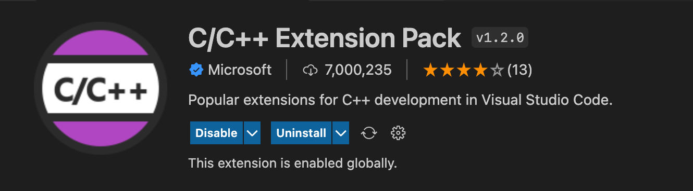
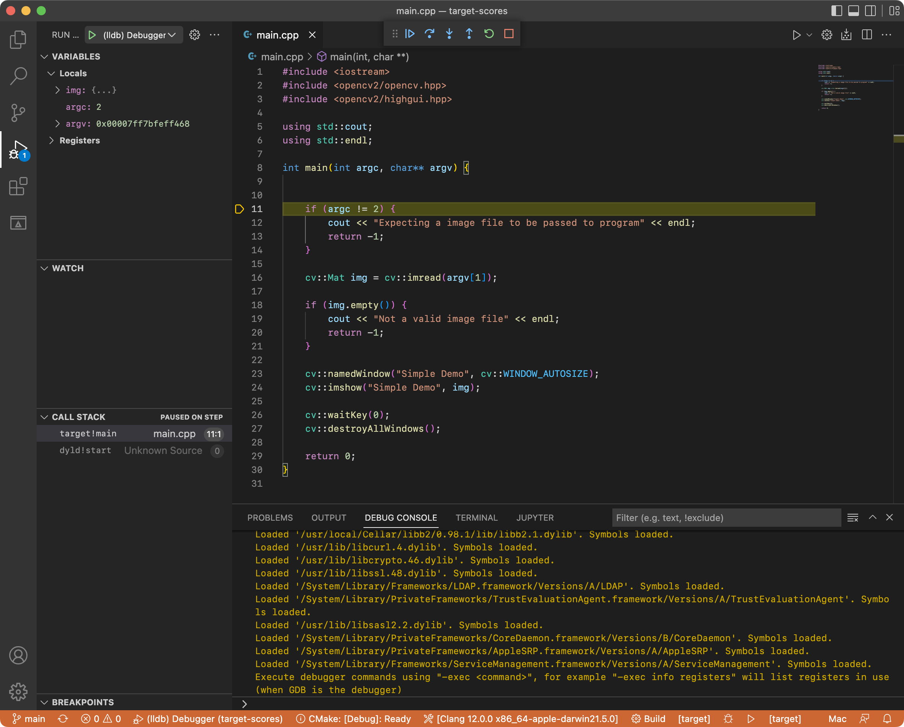

How to Configure your VSCode Environment for C++ on MacOS
Command Line Required
The requirements for setting up a proper VSCode C++ configuration on MacOS for CS use will require you to install a few packages and dependencies, which can only be done with the command shell.However, most of the code below can be copy and pasted into the shell!
This is a tutorial on setting up your environment on VSCode for C++ on the MacOS platform, the version this was tested on is Monterey Version 12.4, and this guide doesn't require you to download the XCode Application as you don't really need it for your development workflow. Command Line Tools and Homebrew are required.
Installing VSC (Visual Studio Code)
The first step is to go ahead and install Visual Studio Code, for their site, linked here
Installing Homebrew
The next step is to install Homebrew and Command Line Tools, you can install the both of them using these two commands.
xcode-select –install
/bin/bash -c "$(curl -fsSL https://raw.githubusercontent.com/Homebrew/install/HEAD/install.sh"
Now, we can start configuring our VSCode Environment!
Installing CMake
CMake can both be installed from its official website as a Graphical application or with Homebrew, for the purposes of this guide we will be working in the shell the majority of the time
brew install cmake ninja
Installing OpenCV
Next we will have to install OpenCV using these two commands
brew install opencv
brew install pkg-config
Create C++ Test Project
We need to test our install by creating a project. The step we first would need to do is create the working directory, you can do this via your file explorer (finder) or via the command line like so
mkdir test && cd test
Next, create your main.cpp file for testing in Visual Studio Code, or in the shell and write a basic hello world program.
#include <iostream>
int main() {
std::cout << "Hello World!";
return 0;
}
After that, create your CMakeLists.txt file.
# This the cmake version that my machine currently installed
cmake_minimum_required(VERSION "3.23")
# name of this example project
project(test)
# set OpenCV_DIR variable equal to the path to the cmake
# files within the previously installed opencv program
# you should check the path with your computer
set(OpenCV_DIR /opt/homebrew/Cellar/opencv/4.5.5_2/include/opencv4)
# Tell compiler to use C++ 14 features which is needed because
# Clang version is often behind in the XCode installation
set(CMAKE_CXX_STANDARD 14)
set(CMAKE_OSX_DEPLOYMENT_TARGET 13.0)
# configure the necessary common CMake environment variables
# needed to include and link the OpenCV program into this
# demo project, namely OpenCV_INCLUDE_DIRS and OpenCV_LIBS
find_package( OpenCV REQUIRED )
# tell the build to include the headers from OpenCV
include_directories( ${OpenCV_INCLUDE_DIRS} )
# specify the executable target to be built
add_executable(test main.cpp)
# tell it to link the executable target against OpenCV
target_link_libraries(test ${OpenCV_LIBS} )
Building your Test Project
Create a directory for the compiling of your test project and build your C++ file as shown below.
mkdir build && cd build
cmake ..
make
Executing your Test Project
Launch your test project
./test
It should say hello world. If so, then you're good to move on!
Configuring VSCode
Install the extension packages for C++ by going to the extensions tab and search for C/C++ Extension Pack

Next, we need add the C++ include path in our configuration file located at .vscode/ c_cpp_properties.json In this case there are 2
- Paths of your C++ Library
- Paths of your OpenCV Library
/usr/local/Cellar/opencv/4.5.5_2/include/opencv4
This location can be obtained by typing the following command in your terminal which uses GCC
gcc -v -E -x c++ -
Which should give an output with the respective directories that we need to add in our extension settings.
Your .vscode/c_cpp_properties.json file will look something like this
{
"configurations": [
{
"name": "Mac",
"includePath": [
"${workspaceFolder}/**",
"/usr/local/include",
"/Library/Developer/CommandLineTools/usr/bin/../include/c++/v1",
"/Library/Developer/CommandLineTools/usr/lib/clang/12.0.0/include",
"/Library/Developer/CommandLineTools/SDKs/MacOSX.sdk/usr/include",
"/Library/Developer/CommandLineTools/usr/include",
"/Library/Developer/CommandLineTools/SDKs/MacOSX.sdk/System/Library/Frameworks",
"/usr/local/Cellar/opencv/4.5.5_2/include/opencv4"
],
"defines": [],
"macFrameworkPath": [],
"compilerPath": "/usr/local/bin/gcc-11",
"cStandard": "gnu17",
"cppStandard": "gnu++17",
"intelliSenseMode": "macos-gcc-x64",
"configurationProvider": "ms-vscode.cmake-tools"
}
],
"version": 4
}
Configuring your C++ Debugger
Finally, lets configure our C++ Debugger, you will need this to launch your debugger view on VSCode
This will require .vscode/launch.json to work
{
"version": "0.2.0",
"configurations": [
{
"name": "(lldb) Debugger",
"type": "cppdbg",
"request": "launch",
"program": "${workspaceFolder}/build/demo",
"args": ["test.jpg"],
"stopAtEntry": true,
"cwd": "${workspaceFolder}",
"environment": [],
"externalConsole": false,
"MIMode": "lldb"
}
]
}

More information regarding your debugging configurations are located on the VSCode Documentation Site